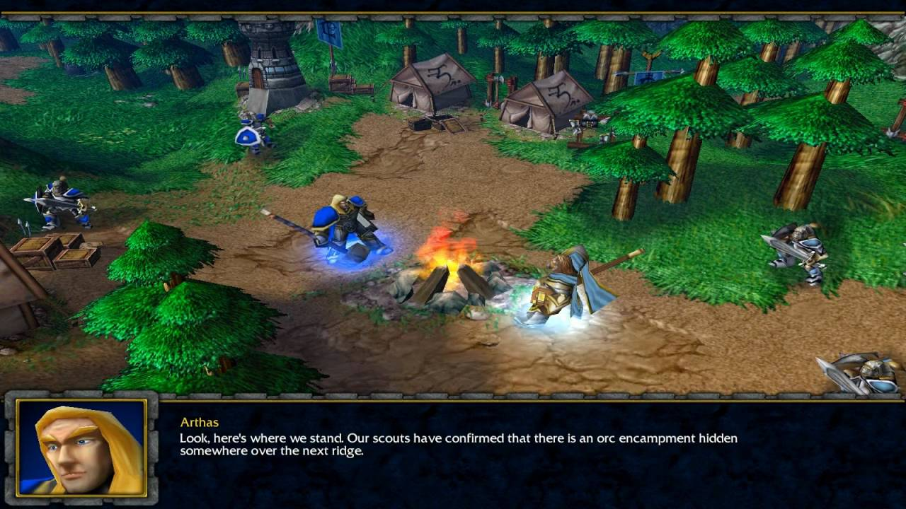
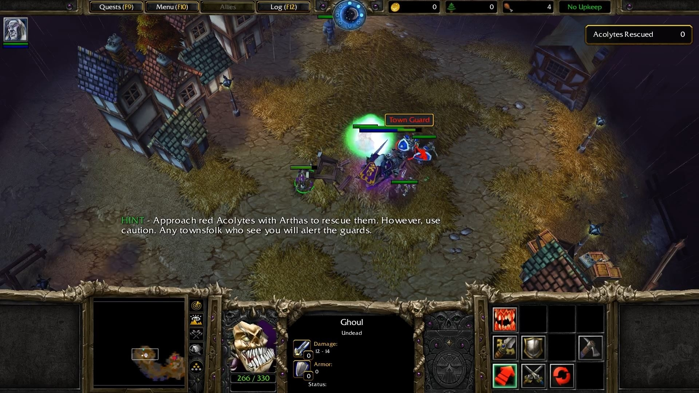
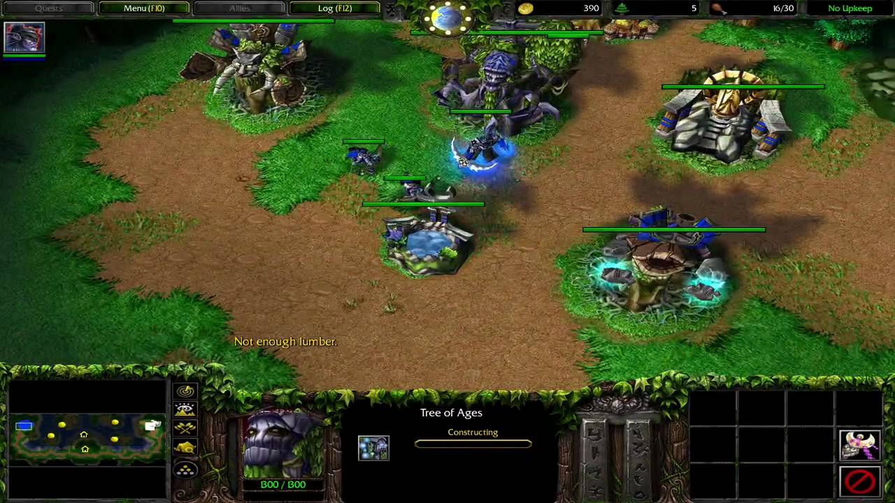

Warcraft 3 Storyline
Exodus of the Horde
The game opens with the Orc leader, Thrall, waking from a nightmare warning him of the return of the Burning Legion. After a brief encounter with a being who is known only as "the Prophet", and, fearing that his dream was more of a vision than a nightmare, he leads his forces in an exodus from Lordaeron to the forgotten lands of Kalimdor.
The Scourge of Lordaeron
Meanwhile, Arthas defends the village of Strahnbrad from orcs. He then joins Archmage Jaina Proudmoore, who aids him in investigating a rapidly spreading plague, which kills and turns human victims into the undead. Arthas kills the plague's originator, Kel'Thuzad, and then purges the infected city of Stratholme which leads Jaina to part ways with him in disgust. The Prophet, who failed to convince other human leaders to flee west, begs Jaina to go to Kalimdor. Arthas pursues the dreadlord Mal'Ganis to the icy continent of Northrend, where he helps his old friend Muradin Bronzebeard in finding a powerful sword called Frostmourne. When he is told that his forces have been recalled by the Emissary, he begins losing his sanity and engineers the burning of his own ships to prevent their return. Arthas and Muradin eventually find Frostmourne but learn that the sword is cursed. Disregarding the warning, Arthas offers his soul to gain the sword which leads to Muradin being knocked out (and presumed dead) by a shard of ice when Frostmourne is released. Arthas slays Mal'Ganis with the sword and returns to Lordaeron where he murders his father, King Terenas.
Path of the Damned
Now an Undead Death Knight, Arthas meets with the leader of the dreadlords, Tichondrius, who tasks him with resurrecting Kel'Thuzad. After exhuming his body and killing his former mentor Uther the Lightbringer for his father's urn to transport the remains in, Arthas sets off to Quel'Thalas, kingdom of the high elves. He kills Sylvanas Windrunner, the Ranger General of Silvermoon (only to resurrect her as a banshee), corrupts their sacred Sunwell and revives Kel'Thuzad as a Lich. The Lich informs him of the Burning Legion, a vast demonic army who are coming to consume the world, as well as about his true master, the Lich King, who was created to aid the Legion with his Undead Scourge but in truth wishes for the Legion to be destroyed. Arthas and Kel'Thuzad open a dimensional portal and summon the demon Archimonde and the Burning Legion, who begins his purging of Lordaeron with the destruction of Dalaran. Arthas and Kel'Thuzad are cast aside by Archimonde but Kel'Thuzad reveals to Arthas that the Lich King has already foreseen this and is planning to overthrow the Burning Legion.
The Invasion of the Kalimdor
Thrall arrives on Kalimdor, meeting Cairne Bloodhoof and the Tauren and clashes with a human expedition on the way to find an Oracle. Meanwhile, the Orcish Warsong Clan is left behind in Ashenvale to build a permanent settlement, but angers the Night Elves and their demigod Cenarius by cutting down the forests for resources. To defeat them, the Warsong leader Grom Hellscream drinks from a fountain contaminated with the blood of the Legion's pit lord commander Mannoroth, successfully killing Cenarius, but binding his clan to the Legion's control. Thrall manages to reach the Oracle, in fact the Prophet, who tells him of Grom's actions. Following the Prophet's directions, Thrall and Jaina join forces and capture Grom, healing him of Mannoroth's corruption. Thrall and Grom begin to hunt Mannoroth and Grom kills him, dying in the process, but in doing so freeing the orcs from the demonic control of Mannoroth.
Eternity's End
Tyrande Whisperwind, leader of the Night Elves, is outraged to find the Humans and Orcs violating the forests and blames them for Cenarius' death, so she vows to destroy both. However, she soon finds out that the Burning Legion has arrived on Kalimdor. In order to oppose the Burning Legion, Tyrande reawakens the sleeping Elf Druids, starting with her lover, Malfurion Stormrage, and frees his brother Illidan Stormrage from prison, against Malfurion's wishes. Illidan meets Arthas, who tells him about the powerful "Skull of Gul'dan". Consuming the Skull and becoming a demon-elf hybrid, Illidan uses its power to kill Tichondrius but is banished from the forest by his brother as he is now part demon. Meanwhile, the Prophet summons Thrall, Jaina, Tyrande and Malfurion, and reveals that he used to be Medivh, the Last Guardian and the betrayer from Warcraft: Orcs & Humans, returned to make amends for his past sins. With the Burning Legion marching towards Mount Hyjal in their intent to corrupt the World Tree and thus the whole world, Humans, Orcs, and Night Elves form a reluctant alliance to spring a trap on the Burning Legion. They manage to delay the Legion long enough for many ancestral spirits to gather at the World Tree and destroy Archimonde as he attempts to reach it but in doing so, the Night Elves lose their immortality and their power over nature will gradually wane over time, though they do not mind. Peace once again comes to Kalimdor as the Burning Legion's forces wither away in defeat. Medivh, in a final monologue, then states that he needed to teach the world that guardians are no longer necessary to look after Azeroth and that he is satisfied that his task is now complete. Medivh then disappears, stating that he will now take his place amongst the legends of the past.
Content
- Exodus of the Horde
- The Scourge of Lordaeron
- Path of the Damned
- The Invasion of Kalimdor
- Eternity's End
Gallery
Human campaign screenshot
Undead campaign screenshot

Orc campaign screenshot
Nigth Elves campaign screenshot